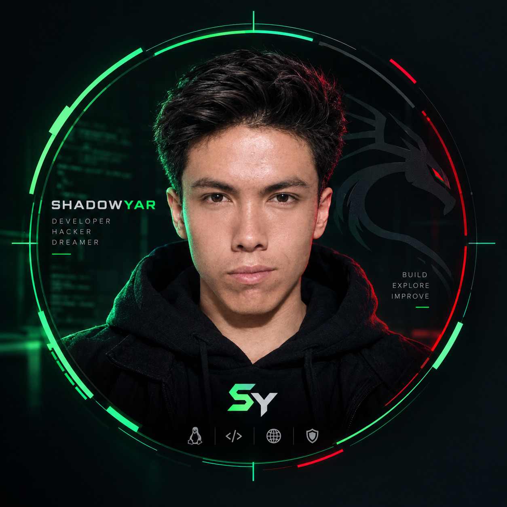

● SYSTEM ONLINE // PORTFOLIO v1.0
SHADOWYAR
WEB DEVELOPER // JAVASCRIPT // PYTHON // LINUX
I build modern web experiences, explore Linux systems, and continuously expand my programming skills. Welcome to my digital command center.

IDENTITY: SHADOWYAR
STATUS: LEARNING + BUILDING